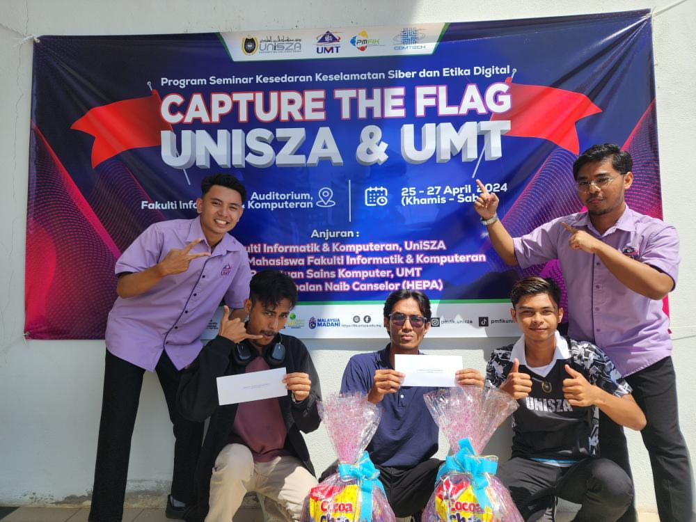

Initializing career trajectory towards Security Operations Center deployment. Focusing on active threat hunting, incident response, and forensic analysis.
A SOC Analyst acts as the digital detective of an organization. Responsibilities include 24/7 monitoring of security alerts, triaging anomalies using SIEM tools, investigating active breaches, and initiating incident response procedures.
Requires a deep mastery of networking protocols (TCP/IP), log analysis, scripting (Python/Bash), and threat intelligence frameworks like MITRE ATT&CK to understand adversarial behavior.
Why are humans still needed when we have firewalls? Because automated tools create thousands of false alarms and miss clever attackers. The SOC Analyst provides critical human judgment to stop attacks before data is stolen.
My hands-on experience with digital forensics, network analysis via Wireshark, and AI-driven anomaly detection perfectly aligns with the analytical mindset required in modern SOCs to investigate complex alerts and identify advanced cyber threats.
While I have a strong foundation in underlying forensic code and basic networking (CCNA), I lack practical, hands-on experience maneuvering enterprise-level SIEM platforms (like Splunk or QRadar) and executing formal Incident Response (IR) protocols in a live environment.
Transition into the industry by securing a foundational role monitoring enterprise networks.
Splunk (SIEM), CrowdStrike (EDR), Linux CLI.
Lead investigations into advanced persistent threats and develop custom AI-driven detection rules.
Python Automation, Autopsy, Volatility.
Engineered an AI image detector using MobileNetV3-small & ResNet50. Implemented a GUI and extracted forensic features (FFT, ELA) to classify 16k real vs. synthetic images.
Demonstrated practical offensive and defensive skills by analyzing network traffic via Wireshark and utilizing Autopsy for disk forensics to locate hidden flags.

I want my technical skills to directly contribute to defending Malaysia's digital sovereignty. Working with CSM’s National Cyber Coordination and Command Centre (NC4) or MyCERT offers the rare opportunity to monitor and protect Critical National Information Infrastructure (CNII), rather than solely protecting corporate profit margins.
I bring a unique blend of fundamental network analysis and modern AI understanding. My experience analyzing packet data in Wireshark, combined with my research in AI anomaly detection, means I can effectively triage complex SIEM alerts, filter out false positives, and hunt for sophisticated threat actors attempting to breach national networks.
Highly adaptable technical depth. I am comfortable pivoting from writing Python backend logic to troubleshooting hardware circuits on IoT robots. I understand how systems communicate from the physical layer up to the application layer, which is critical for tracing network intrusions.
A lack of experience managing enterprise-scale SIEM platforms under the high-pressure environment of a live cyberattack. I am eager to bridge this gap by learning directly from gazetted CSM analysts and pursuing specialized incident response certifications.